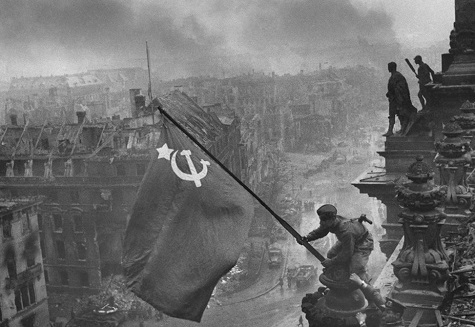

История
Первый День Победы в истории отметили в 1945-м — на Красной Площади в Москве в честь победы в Великой Отечественной войне 24 июня прошел военный парад, который принимал маршал Георгий Жуков. Событие, которое навсегда вошло в мировую историю — низложение нацистских знамен и штандартов – они были брошены на помост возле Мавзолея, произошло именно на этом параде. День Победы 9 мая был официальным выходным днем вплоть до 1948, затем его на долгие годы упразднили, хотя праздничные мероприятия, посвященные победе, проводились во всех населенных пунктах огромной страны.
Праздник День Победы стал нерабочим днем снова только в 1965-м. Праздник, в период времени между 1965-1990 отмечался 9 мая очень широко — военные парады, проходившие в День Победы, наглядно демонстрировали всю мощь Советской армии и последние достижения в области разработки военной техники. Многие страны после распада СССР, в том числе и Грузия, продолжают отмечать праздник День Победы 9 мая. Праздник День Победы в России на несколько лет, после распада Союза, утратил свой торжественный статус. Военные парады в День Победы с участием боевой техники и военной авиации на Красной Площади в Москве традиционно начали проводить с 9 мая 1995.
География городов, в которых отмечается праздник, постепенно становится все шире и шире. День Победы 9 мая отмечают особенно торжественно в городах-героях России. Европейские страны отмечают праздник Победы во Второй мировой войне 8 мая – в день, когда по центрально-европейскому времени Германия подписала акт о капитуляции.В ходе военных действий, которые длились почти четыре года, только в СССР было разрушено 1 710 городов, более 70 тысяч деревень, 32 тысячи фабрик и заводов, разграблено 98 тысяч колхозов — общая стоимость этих разрушений 128 миллиардов долларов. О войне мы знаем из рассказов старшего поколения и из книг по истории, но эти страшные события для миллионов людей были реальностью. Война принесла много горя – погибли миллионы солдат и мирных граждан. Советский Союз в общей сложности потерял 25,6 миллиона граждан, по другим данным 29,6 миллиона человек. Не менее 13,7 миллиона человек среди жертв войны составляет мирное население.В День Победы возлагают венки к Могилам Неизвестного Солдата, возле Вечного Огня – он горит в память о павших героях.
Подвиг
Осень 1941 г. войска гитлеровской Германии развернули масштабное наступление на Москву. На отдельных участках им удалось почти вплотную приблизиться к столице СССР. На защиту столицы были брошены все имеющиеся в резерве войска и отряды народного ополчения. В боях принимала участие 316-я стрелковая дивизия, сформированная в Казахстане и Киргизии. Командование подразделением осуществлял генерал-майор И. В. Панфилов, по имени которого бойцы дивизии стали называться «панфиловцами» 16 ноября противник начал атаку. Немецкие танки штурмовали советские позиции в районе разъезда Дубосеково, где дислоцировался 1075-й стрелковый полк. Основной удар приняли на себя бойцы 2-го батальона полка..
По версии военного времени 28 красноармейцев под руководством политрука В. Клочкова были организованы в особую группу истребителей танков. В течение 4-х часов они вели неравный бой с противником. Вооруженные противотанковыми ружьями и бутылками с зажигательной смесью, панфиловцы уничтожили 18 немецких танков и сами при этом погибли. Общие потери 1075-го полка составили более 1000 человек. Всего полк уничтожил 22 танка противника и до 1200 немецких солдат.
Неприятель сумел одержать победу в сражении под Волоколамском, но бой занял намного больше времени, чем отводили на него немецкие командиры. Советские военачальники сумели использовать это время для перегруппировки войск и создания нового заслона на пути к Москве. В дальнейшем немцы не сумели продолжить наступление, а в декабре 1941 г. советские войска нанесли контрудар, окончательно отбросивший противника от столицы. После боя командир подразделения составил список бойцов, участвовавших в сражении. Впоследствии они были представлены к званию Героя Советского Союза. Но командир полка допустил несколько неточностей. Из-за его ошибки в список были внесены фамилии бойцов, ранее погибших или раненых, которые не могли участвовать в бою. Возможно несколько фамилий были забыты. После завершения войны было проведено расследование, в ходе которого выяснилось, что 5 бойцов из числа 28 панфиловцев в действительности не погибли, а один из них попал в плен и сотрудничал с нацистами, за что был осужден. Но официальная версия события долгое время являлась единственной, широко распространенной в СССР. Современные же историки считают, что число державших оборону бойцов не равнялось 28 и что на самом деле в бою могли участвовать совсем другие красноармейцы.
Герои Чувашии
Григо́рий Алексе́евич Алексе́ев (12 октября 1903 — 9 ноября 1943 года) — Герой Советского Союза (1943) , участник Великой Отечественной войны.
1925 году был призван в Красную Армию, до 1927 года проходил военную службу в артиллерийском полку. После увольнения в запас работал участковым милиционером в г. Кинешма Ивановской области. В ноябре 1941 года вновь призван в Красную Армию и направлен на фронт в пехоту. Сражался Григорий отважно, в одном из боев поджег бутылкой вражеский танк. Под Ржевом был ранен, после госпиталя вернулся на фронт. Отличился в боях при форсировании Днепра. В ночь на 16 октября 1943 года рядовой Алексеев в составе десантной группы под сильным огнём преодолел Днепр в районе поселка Лоев Гомельской области. Участвовал в отражении контратак противника при удержании плацдарма, лично подбил несколько танков. Был несколько раз ранен, но не покинул поле боя. Умер при эвакуации.
Николай Степанович Ижутов (11 июня 1920 года, Чувашия — 19 июля 1994 года) — Герой Советского Союза (1946), участник Великой Отечественной войны.
1939 — в октябре призван в ряды РККА. 1941 — окончил Челябинское военное авиационное училище и был в звании лейтенанта направлен в Высшую школу штурманов. 1942 — в октябре прибыл в 108-й дальнебомбардировочный авиационный полк авиации дальнего действия (АДД). За годы войны на Ил-4 выполнил 202 боевых вылета ночью, налетав 833 часа. Бомбил военно-промышленные объекты на территории Польши, Венгрии, Германии, Норвегии, Финляндии, Прибалтики и др..
Николай Степанович Ижутов (11 июня 1920 года, Чувашия — 19 июля 1994 года) — Герой Советского Союза (1946), участник Великой Отечественной войны.
После окончания техникума работал в Архангельской области, откуда в 1938 году был призван в Красную Армию. В боевых действиях участвовал с августа 1941 года пулемётчиком на Карельском фронте. Михаил Родионов совершил свой подвиг 7 ноября 1941 года у станции Лоухи Карело-Финской ССР, когда, будучи ранен и находясь в окружении, он несколько часов сдерживал атаки фашистов пулемётным огнём, а затем, чтобы не попасть в плен, подорвал себя и врагов гранатой. Похоронен в братской могиле в посёлке Сосновый Лоухского района Карелии.
- Одни из героев ВОВ:
- Герои Сталинграда
- Василевский А.М.(1895-1977)
- Андрей И.Е.(1882-1970)
- Павел И.Б.(1897-1985)
- Установили Знамя Победы
- Егоров Михаил Алексеевич(1923-1975)
- Милитан Контария Варламович(1920-1993)
- Герои Брестской крепости
- Ефим Моисеевич Фомин(1909-1941)
- Иван Николаевич Зубачёв(1898—1944)
- Пётр Михайлович Гаврилов(1900-1979)
- Анатолий Александрович Виноградов(1912-1975)
- Андрей Митрофанович Кижеватов(1907-1941)
- Мельников Федор Михайлович(1905-1965)
- Черный Аким Степанович(1911-1985)
- Александр Ефремович Потапов(1913-1941)
| Герой | Годы жизни |
|---|---|
| Ефим Моисеевич Фомин | (1909-1941) |
| Иван Николаевич Зубачёв | (1898—1944) |
| Мельников Федор Михайлович | (1905-1965) |
| Черный Аким Степанович | (1911-1985) |
| Анатолий Александрович Виноградов | (1912-1975) |